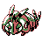
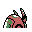

#204
Venipede
BugPoison
It bites and jabs when stepped on, then releases a sharp, bitter odor
Base stats Total 226
HP30
Attack45
Defense59
Speed57
Special35
Details
- Species
- Centipede
- Height
- 1'04"
- Weight
- 11.7 lb
- Catch rate
- 255
- Base exp
- 52
- Growth
- Medium Slow
Level-up moves
LevelMoveType
StartPoison StingPoison
StartString ShotBug
Lv 9Pin MissileBug
Lv 14Bug BiteBug
Lv 18AcidPoison
Lv 23ScreechNormal
Lv 31X ScissorBug
Lv 35Take DownNormal
Lv 44Double-EdgeNormal
Evolution
TM / HM
TM06 ToxicTM09 Take DownTM10 Double-EdgeTM21 Mega DrainTM22 SolarbeamTM31 MimicTM32 Double TeamTM34 BideTM39 SwiftTM40 Sludge BombTM44 RestTM50 Substitute